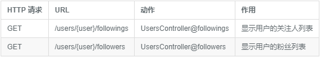

关注用户的网页界面
现在我们已经实现了用户关注功能的主要工具方法, 并且能够通过用户来获取他的粉丝列表和关注人列表
接下来我们来进行视图的构建, 页面上显示粉丝列表和关注人列表, 并且在用户的个人页面上添加一个关注按钮
示例数据
我们要用数据填充的方式, 为第一个用户添加假数据, 让他拥有一些关注人和粉丝
$ php artisan make:seeder FollowersTableSeeder
我们会使用第一个用户除自己以外的用户进行关注, 接着让所有用户去关注第一个用户, 假数据生成代码:
database/seeds/FollowersTableSeeder.php
<?php
use Illuminate\Database\Seeder;
use App\Models\User;
class FollowersTableSeeder extends Seeder
{
/**
* Run the database seeds.
*
* @return void
*/
public function run()
{
$users = User::all();
$user = $users->first();
$user_id = $user->id;
// 获取去除掉 ID 为 1 的所有用户 ID 数组
$followers = $users->slice(1);
$follower_ids = $followers->pluck('id')->toArray();
// 关注除了 1 号用户以外的所有用户
$user->follow($follower_ids);
// 除了 1 号用户以外的所有用户都来关注 1 号用户
foreach ($followers as $follower) {
$follower->follow($user_id);
}
}
}
接着让我们为假数据的生成顺序进行设定
database/seeds/DatabaseSeeder.php
<?php
use Illuminate\Database\Seeder;
use Illuminate\Database\Eloquent\Model;
class DatabaseSeeder extends Seeder
{
/**
* Run the database seeds.
*
* @return void
*/
public function run()
{
Model::unguard();
$this->call(UsersTableSeeder::class);
$this->call(StatusesTableSeeder::class);
$this->call(FollowersTableSeeder::class);
Model::reguard();
}
}
最后, 需要对数据进行重置和填充
$ php aritsan migrate:refresh -seed
关注的人 和 粉丝 列表页面
现在让我们接着定义用户关注列表和粉丝列表的路由
routes/web.php
<?php
.
.
.
Route::get('/users/{user}/followings', 'UsersController@followings')->name('users.followings');
Route::get('/users/{user}/followers', 'UsersController@followers')->name('users.followers');

可以看到两个新增路由都被映射到用户控制器上, 因此我们需要在控制器中新加两个方法, 显示用户关注人列表视图的 following 和 显示用户粉丝列表的 followers, 接着我们对两个动作进行过滤, 得益于 auth 中间件的使用, 不需要做修改, 此控制器默认为安全, 也就是其他用户没有权限访问登录用户的关注和粉丝列表
app/Http/Controllers/UsersController.php
<?php
namespace App\Http\Controllers;
.
.
.
class UsersController extends Controller
{
.
.
.
public function followings(User $user)
{
$users = $user->followings()->paginate(30);
$title = '关注的人';
return view('users.show_follow', compact('users', 'title'));
}
public function followers(User $user)
{
$users = $user->followers()->paginate(30);
$title = '粉丝';
return view('users.show_follow', compact('users', 'title'));
}
}
由上面的代码可知, 我们添加了 title 变量用于网页标题的显示, 这是因为我们最终构建出来的关注人列表视图 和 粉丝视图在大体结构上面是相同的. 避免代码的复写, 我们使用同一套视图.
resources/views/users/show_follow.blade.php
@extends('layouts.default')
@section('title', $title)
@section('content')
<div class="col-md-offset-2 col-md-8">
<h1>{{ $title }}</h1>
<ul class="users">
@foreach ($users as $user)
<li>
<img src="{{ $user->gravatar() }}" alt="{{ $user->name }}" class="gravatar"/>
<a href="{{ route('users.show', $user->id )}}" class="username">{{ $user->name }}</a>
</li>
@endforeach
</ul>
{!! $users->render() !!}
</div>
@stop

接着我们使用一个局部视图, 用于展示用户的一些社交的统计信息
resources/views/shared/_stats.blade.php
<div class="stats">
<a href="{{ route('users.followings', $user->id) }}">
<strong id="following" class="stat">
{{ count($user->followings) }}
</strong>
关注
</a>
<a href="{{ route('users.followers', $user->id) }}">
<strong id="followers" class="stat">
{{ count($user->followers) }}
</strong>
粉丝
</a>
<a href="{{ route('users.show', $user->id) }}">
<strong id="statuses" class="stat">
{{ $user->statuses()->count() }}
</strong>
微博
</a>
</div>
我们调用 count 方法来获取用户发布信息的统计数, 这个做法并不是最佳实践, 因为在大型应用中, 为了节省服务器资源, 优化数据库查询效率, 常会采用的方法是在数据库中添加一个模型计数字段, 在每次对模型进行创建或删除时, 该字段进行更新,
在定义好统计视图之后, 需要将视图添加到首页上进行显示
resources/views/static_pages/home.blade.php
@extends('layouts.default')
@section('content')
@if (Auth::check())
<div class="row">
<div class="col-md-8">
<section class="status_form">
@include('shared._status_form')
</section>
<h3>微博列表</h3>
@include('shared._feed')
</div>
<aside class="col-md-4">
<section class="user_info">
@include('shared._user_info', ['user' => Auth::user()])
</section>
<section class="stats">
@include('shared._stats', ['user' => Auth::user()])
</section>
</aside>
</div>
@else
<div class="jumbotron">
<h1>Hello Laravel</h1>
<p class="lead">
</p>
<p>
一切，将从这里开始。
</p>
<p>
<a class="btn btn-lg btn-success" href="{{ route('signup') }}" role="button">现在注册</a>
</p>
</div>
@endif
@stop
然后我们进行样式美化
resources/assets/sass/app.scss
.
.
.
/* sidebar */
.
.
.
.stats {
overflow: auto;
margin-top: 0;
padding: 0;
a {
float: left;
padding: 0 10px;
text-align: center;
width: 33%;
border-left: 1px solid $gray-lighter;
color: gray;
&:first-child {
padding-left: 0;
border: 0;
}
&:hover {
text-decoration: none;
color: #337ab7;
}
}
strong {
display: block;
font-size: 1.2em;
color: black;
}
}
.user_avatars {
overflow: auto;
margin-top: 10px;
.gravatar {
margin: 1px 1px;
}
a {
padding: 0;
}
}
.users.follow {
padding: 0;
}
/* forms */
#follow_form button {
margin: 0 auto;
display: block;
margin-top: 25px;
}
.
.
.

关注表单
添加路由
针对 关注用户 和 取消关注 进行路由添加
routes/web.php
<?php
.
.
.
Route::post('/users/followers/{user}', 'FollowersController@store')->name('followers.store');
Route::delete('/users/followers/{user}', 'FollowersController@destroy')->name('followers.destroy');

都映射到 FollowersController 上, 进行创建控制器
$ php artisan make:controller FollowersController
接下来在用户个人页面上增加一个关注表单, 以按钮的形式展现, 点击进行关注
resources/views/users/_follow_form.blade.php
@if ($user->id !== Auth::user()->id)
<div id="follow_form">
@if (Auth::user()->isFollowing($user->id))
<form action="{{ route('followers.destroy', $user->id) }}" method="post">
{{ csrf_field() }}
{{ method_field('DELETE') }}
<button type="submit" class="btn btn-sm">取消关注</button>
</form>
@else
<form action="{{ route('followers.store', $user->id) }}" method="post">
{{ csrf_field() }}
<button type="submit" class="btn btn-sm btn-primary">关注</button>
</form>
@endif
</div>
@endif
使用这行代码进行判断, 自己的个人页面不显示关注表单
$user->id !== Auth::user()->id
关注状态
接着, 关注表单需要分为两种状态
- 用户被关注, 显示取消关注
- 用户未被关注, 显示关注
通过 User 模型中的 isFollowing 来判断是否已经被关注
下面我们为用户个人页面添加关注表单和信息统计图
resources/views/users/show.blade.php
@extends('layouts.default')
@section('title', $user->name)
@section('content')
<div class="row">
<div class="col-md-offset-2 col-md-8">
<div class="col-md-12">
<div class="col-md-offset-2 col-md-8">
<section class="user_info">
@include('shared._user_info', ['user' => $user])
</section>
<section class="stats">
@include('shared._stats', ['user' => $user])
</section>
</div>
</div>
<div class="col-md-12">
@if (Auth::check())
@include('users._follow_form')
@endif
@if (count($statuses) > 0)
<ol class="statuses">
@foreach ($statuses as $status)
@include('statuses._status')
@endforeach
</ol>
{!! $statuses->render() !!}
@endif
</div>
</div>
</div>
@stop
由于我们没有对用户个人页面对应的请求进行过滤,因此未登录用户也能查看其他用户的个人信息 通过 Auth::check( ) 方法判断是否已经登录
关注功能的逻辑处理
现在用户关注列表已经构建完成, 让我们为 FollowersContoller 加上 store 和 destroy 动作分别用于处理 关注 和 取消关注 请求
app/Http/Controllers/FollowersController.php
<?php
namespace App\Http\Controllers;
use Illuminate\Http\Request;
use App\Http\Requests;
use App\Models\User;
use Auth;
class FollowersController extends Controller
{
public function __construct()
{
$this->middleware('auth');
}
public function store(User $user)
{
if (Auth::user()->id === $user->id) {
return redirect('/');
}
if (!Auth::user()->isFollowing($user->id)) {
Auth::user()->follow($user->id);
}
return redirect()->route('users.show', $user->id);
}
public function destroy(User $user)
{
if (Auth::user()->id === $user->id) {
return redirect('/');
}
if (Auth::user()->isFollowing($user->id)) {
Auth::user()->unfollow($user->id);
}
return redirect()->route('users.show', $user->id);
}
}
由于这两个动作都需要用户登录之后才能进行操作，因此我们为这两个动作都加上请求过滤。由于用户不能对自己进行关注和取消关注，因此我们在 store 和 destroy 方法中都对用户身份做了判断，当执行关注和取消关注的用户对应的是当前的用户时，重定向到首页。由于这两个动作都需要用户登录之后才能进行操作，因此我们为这两个动作都加上请求过滤。由于用户不能对自己进行关注和取消关注，因此我们在 store 和 destroy 方法中都对用户身份做了判断，当执行关注和取消关注的用户对应的是当前的用户时，重定向到首页。
为了使代码逻辑更加严谨, 在进行关注和取消关注之前, 我们还会利用 isFollowing 方法判断当前用户是否已经关注了要进行操作的用户